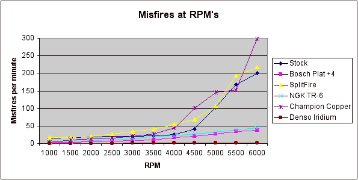

|
spark plugs |
|
From Rob02 Lightning: Go for the money and get the Denso IT-22's, here's why. Many people as you see are happy with TR-6's, but just as many are not. They are of course the plug of choice and that’s partially because they are 18.00 compared to 80.00 for Denso's.
My personal experience was a bad
idle from them. As for the heat range, why I like Denso's are because you
can run the colder 22's and be safe and give yourself a little room for
error in a tune, yet because of their design, you are pretty much
guaranteed a great idle and no misses. Another words they're more
forgiving if you know what I mean. The main thing is THEY DO take more
heat out of the cylinder than a TR-6 will and heat is bad for a Lightning.
|
|
 |
© 06/24/2003 Tim Skelton